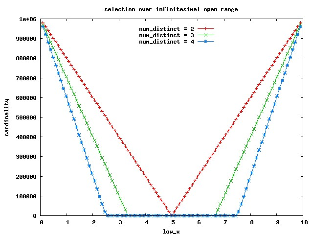

An investigation, based on Jonathan Lewis' test case "Discrete Dangers" on page 126 of "Cost Based Oracle", to discover and illustrate the exact formula that the CBO uses to estimate the cardinality for (bounded) range predicates.
The main result is that Jonathan's "standard formula" applies in a wider context than expected (by me at least), allowing for a couple of slight modifications relevant for some (but important) cases only.
We'll start on this page with (open,open) ranges, than we'll continue on the next page with (closed,closed) ranges, and then with (open,closed),(closed,open) on another page. The conclusion is here.
Now the script runs this series of statements, and collects the CBO estimate of cardinality for each one:
select x from t where x > 0.1234 and x < 0.1234 + 0.001
select x from t where x > 0.3456 and x < 0.3456 + 0.001
..
select x from t where x > 9.6789 and x < 9.6789 + 0.001
The template is of course a selection over a (bounded, open) range predicate:
select x from t where x > low_x and x < low_x + w
keeping w constant and very small ("infinitesimal"), and letting low_x vary to cover the (minx_, max_x) interval.
If you diagram the estimated cardinality versus low_x, you get the red line on the following graph:

The green line (num_distinct=3) is obtained by adding to the table another distinct value (we add 1,000,000 rows to keep num_rows/num_distinct the same):
insert into t(x) select 6.1 from dual connect by level <= 1000000;
And the blue line (num_distinct=4) after adding a fourth distinct value:
insert into t(x) select 7.42 from dual connect by level <= 1000000;
By looking at the graphs and the data, we can make the following deductions (the ones labeled by [JLB] are already discussed in Jonathan Lewis' Book quoted above; here I've just verified that they apply to my data sets):
There's a specular simmetry around the midinterval point 5.0 = (max_x - min_x) / 2, eg the cardinality for
where x > 0.1 and x < 0.1 + 0.001
where x > 0.9 - 0.001 and x < 0.9
is the same [JLB];
There's a flat region at the center, surrounded by two lateral bands (ramps) whose width is B = (max_x - min_x) / num_distinct [JLB];
For ranges completely contained in the central flat region, the cardinality honours the standard formula
cardinality = num_rows * w / (max_x - min_x)
[JLB]
For ranges completely contained in the lateral bands:
the cardinality does not depend on w but depends only on the value of low_x for the left ramp
(and for symmetry, of high_x = low_x + w for the right ramp).
In fact (for num_distinct=4):
SQL> select x from t where x > 0.1 and x < 0.1 + 0.001;
--------------------------------------------------------------------------
| Id | Operation | Name | Rows | Bytes | Cost (%CPU)| Time |
--------------------------------------------------------------------------
| 0 | SELECT STATEMENT | | 960K| 2812K| 1436 (6)| 00:00:18 |
|* 1 | TABLE ACCESS FULL| T | 960K| 2812K| 1436 (6)| 00:00:18 |
--------------------------------------------------------------------------
SQL> select x from t where x > 0.1 and x < 0.1 + 2;
--------------------------------------------------------------------------
| Id | Operation | Name | Rows | Bytes | Cost (%CPU)| Time |
--------------------------------------------------------------------------
| 0 | SELECT STATEMENT | | 960K| 2812K| 1436 (6)| 00:00:18 |
|* 1 | TABLE ACCESS FULL| T | 960K| 2812K| 1436 (6)| 00:00:18 |
--------------------------------------------------------------------------
the cardinality formula (for the left ramp) is:
let B = (max_x - min_x) / num_distinct
let height_ramp = num_rows / num_distinct
cardinality = height_ramp - height_ramp * (low_x - min_x) / B
Eg for num_distinct=4: B = 2.5; height_ramp = 1,000,000
for low_x = 1.765830 => cardinality = 1000000 - 1000000 * (1.765830-0) / 2.5 = 293668
which is exactly the value we observe in the blue line data.
for low_x = min_x (or high_x = max_x for the right ramp), we always get 1 (special case) [JLB]:
SQL> select x from t where x > 0 and x < 0+0.00000000000000001;
--------------------------------------------------------------------------
| Id | Operation | Name | Rows | Bytes | Cost (%CPU)| Time |
--------------------------------------------------------------------------
| 0 | SELECT STATEMENT | | 1 | 3 | 1436 (6)| 00:00:18 |
|* 1 | TABLE ACCESS FULL| T | 1 | 3 | 1436 (6)| 00:00:18 |
--------------------------------------------------------------------------
SQL> select x from t where x > 0 and x < 2.5;
--------------------------------------------------------------------------
| Id | Operation | Name | Rows | Bytes | Cost (%CPU)| Time |
--------------------------------------------------------------------------
| 0 | SELECT STATEMENT | | 1 | 3 | 1436 (6)| 00:00:18 |
|* 1 | TABLE ACCESS FULL| T | 1 | 3 | 1436 (6)| 00:00:18 |
--------------------------------------------------------------------------
For ranges overlapping the regions - check the next section.
Selection over a finite range
The script range_sel_finite.sql repeats the very same steps of the script above, but the statements' template is now
select x from t where x > low_x and x < high_x
where low_x = constant = 0.1, and high_x varies to cover the whole interval (low_x, max_x).
The diagram of the estimated cardinality versus high_x (click to get the data sets for the red,
green and blue line) is:
We can make the following deductions:
The flat region on the left is for high_x <= min_x + B, and it's the same region we described as "left ramp" on the section about the infinitesimal range.
The flatness, of course, is due to the range being completely inside this region - hence, as we saw, the cardinality depends only on low_x (constant in this case) and not on the width of the range. The formula already discussed above applies.
As soon as high_x crosses the min_x + B boundary, the CBO breaks the range in two halves (left and right of the boundary), computes the cardinality estimation separately, and than adds them. Let's name this the "formal method of ranges decomposition" since we'll use it again, adapted as necessary.
Instead of showing by formulae - let's see it directly (for num_distinct=4, min_x + B = 2.5):
SQL> select x from t where x > 0.1 and x < 7;
--------------------------------------------------------------------------
| Id | Operation | Name | Rows | Bytes | Cost (%CPU)| Time |
--------------------------------------------------------------------------
| 0 | SELECT STATEMENT | | 2760K| 8085K| 1444 (7)| 00:00:18 |
|* 1 | TABLE ACCESS FULL| T | 2760K| 8085K| 1444 (7)| 00:00:18 |
--------------------------------------------------------------------------
SQL> select x from t where x > 0.1 and x < 2.5;
--------------------------------------------------------------------------
| Id | Operation | Name | Rows | Bytes | Cost (%CPU)| Time |
--------------------------------------------------------------------------
| 0 | SELECT STATEMENT | | 960K| 2812K| 1436 (6)| 00:00:18 |
|* 1 | TABLE ACCESS FULL| T | 960K| 2812K| 1436 (6)| 00:00:18 |
--------------------------------------------------------------------------
SQL> select x from t where x > 2.5 and x < 7;
--------------------------------------------------------------------------
| Id | Operation | Name | Rows | Bytes | Cost (%CPU)| Time |
--------------------------------------------------------------------------
| 0 | SELECT STATEMENT | | 1800K| 5273K| 1444 (7)| 00:00:18 |
|* 1 | TABLE ACCESS FULL| T | 1800K| 5273K| 1444 (7)| 00:00:18 |
--------------------------------------------------------------------------
1800K + 960K = 2760K, as requested.
The same applies when high_x enters the "right band" region (we have three ranges now to add of course); again for num_distinct=4:
SQL> select x from t where x > 0.1 and x < 9;
--------------------------------------------------------------------------
| Id | Operation | Name | Rows | Bytes | Cost (%CPU)| Time |
--------------------------------------------------------------------------
| 0 | SELECT STATEMENT | | 3560K| 10M| 1447 (7)| 00:00:18 |
|* 1 | TABLE ACCESS FULL| T | 3560K| 10M| 1447 (7)| 00:00:18 |
--------------------------------------------------------------------------
SQL> select x from t where x > 0.1 and x < 2.5;
--------------------------------------------------------------------------
| Id | Operation | Name | Rows | Bytes | Cost (%CPU)| Time |
--------------------------------------------------------------------------
| 0 | SELECT STATEMENT | | 960K| 2812K| 1436 (6)| 00:00:18 |
|* 1 | TABLE ACCESS FULL| T | 960K| 2812K| 1436 (6)| 00:00:18 |
--------------------------------------------------------------------------
SQL> select x from t where x > 2.5 and x < 7.5;
--------------------------------------------------------------------------
| Id | Operation | Name | Rows | Bytes | Cost (%CPU)| Time |
--------------------------------------------------------------------------
| 0 | SELECT STATEMENT | | 2000K| 5859K| 1444 (7)| 00:00:18 |
|* 1 | TABLE ACCESS FULL| T | 2000K| 5859K| 1444 (7)| 00:00:18 |
--------------------------------------------------------------------------
SQL> select x from t where x > 7.5 and x < 9;
--------------------------------------------------------------------------
| Id | Operation | Name | Rows | Bytes | Cost (%CPU)| Time |
--------------------------------------------------------------------------
| 0 | SELECT STATEMENT | | 600K| 1757K| 1436 (6)| 00:00:18 |
|* 1 | TABLE ACCESS FULL| T | 600K| 1757K| 1436 (6)| 00:00:18 |
--------------------------------------------------------------------------
600K + 2000K + 960K = 3560K, as requested again.
But a very interesting discovery is that by using the standard formula, we get the same results, even if one of the extremes of the range, or both, is inside one of the two lateral bands - as far as the extremes are not both in the same band. That is, the standard formula validity extends far beyond the "central" region - almost to the whole interval.
I've included, in the three data sets drawn in the graph, the column CARD_STND_F that computes the standard formula
and you can verify that it matches perfectly the CBO estimate - for high_x >= min_x + B.
We can quickly check the case of the previous bullet point (where x > 0.1 and x < 9) - the explain plan computes 3560K and in fact
cardinality = 4000000 * (9-0.1) / (10-0) = 3560000
even if low_x is inside the left band, and high_x is inside the right band.
Also for the the other case above (where x > 0.1 and x < 7) - the explain plan computes 2760K and
cardinality = 4000000 * (7 - 0.1) / (10-0) = 2760000
even if low_x is inside the left band, and high_x is inside the "central region".
That is due to the function of the bands, that can be thought as a precomputation of the value of the standard formula for a selection over the ranges (low_x, min_x + B) and (max_x - B, high_x).
For the special case of "range extreme matching the interval extreme":
For num_distinct = 4, low_x = min_x = 0:
For high_x inside the left band:
SQL> select x from t where x > 0 and x < 1;
--------------------------------------------------------------------------
| Id | Operation | Name | Rows | Bytes | Cost (%CPU)| Time |
--------------------------------------------------------------------------
| 0 | SELECT STATEMENT | | 1 | 3 | 1436 (6)| 00:00:18 |
|* 1 | TABLE ACCESS FULL| T | 1 | 3 | 1436 (6)| 00:00:18 |
--------------------------------------------------------------------------
SQL> select x from t where x > 0 and x < 2.5;
--------------------------------------------------------------------------
| Id | Operation | Name | Rows | Bytes | Cost (%CPU)| Time |
--------------------------------------------------------------------------
| 0 | SELECT STATEMENT | | 1 | 3 | 1436 (6)| 00:00:18 |
|* 1 | TABLE ACCESS FULL| T | 1 | 3 | 1436 (6)| 00:00:18 |
--------------------------------------------------------------------------
The standard formula definitely does not apply.
For high_x inside the "central region":
SQL> select x from t where x > 0 and x < 3;
--------------------------------------------------------------------------
| Id | Operation | Name | Rows | Bytes | Cost (%CPU)| Time |
--------------------------------------------------------------------------
| 0 | SELECT STATEMENT | | 200K| 585K| 1437 (6)| 00:00:18 |
|* 1 | TABLE ACCESS FULL| T | 200K| 585K| 1437 (6)| 00:00:18 |
--------------------------------------------------------------------------
Standard formula = 4000000 * (3-0) / (10-0) = 1200K (no match).
Error = 1200K - 200K = 1000K.
SQL> select x from t where x > 0 and x < 7.5;
--------------------------------------------------------------------------
| Id | Operation | Name | Rows | Bytes | Cost (%CPU)| Time |
--------------------------------------------------------------------------
| 0 | SELECT STATEMENT | | 2000K| 5859K| 1444 (7)| 00:00:18 |
|* 1 | TABLE ACCESS FULL| T | 2000K| 5859K| 1444 (7)| 00:00:18 |
--------------------------------------------------------------------------
Standard formula = 4000000 * (7.5-0) / (10-0) = 3000K (no match).
Error = 3000K - 2000K = 1000K.
For high_x inside the right band:
SQL> select x from t where x > 0 and x < 9;
--------------------------------------------------------------------------
| Id | Operation | Name | Rows | Bytes | Cost (%CPU)| Time |
--------------------------------------------------------------------------
| 0 | SELECT STATEMENT | | 2600K| 7617K| 1444 (7)| 00:00:18 |
|* 1 | TABLE ACCESS FULL| T | 2600K| 7617K| 1444 (7)| 00:00:18 |
--------------------------------------------------------------------------
Standard formula = 4000000 * (9 - 0) / (10-0) = 3600K (no match).
Error = 3600K - 2600K = 1000K.
SQL> select x from t where x > 0 and x < 10;
--------------------------------------------------------------------------
| Id | Operation | Name | Rows | Bytes | Cost (%CPU)| Time |
--------------------------------------------------------------------------
| 0 | SELECT STATEMENT | | 2000K| 5859K| 1444 (7)| 00:00:18 |
|* 1 | TABLE ACCESS FULL| T | 2000K| 5859K| 1444 (7)| 00:00:18 |
--------------------------------------------------------------------------
Standard formula = 4000000 * (10 -0) / (10-0) = 4000K (no match).
Error = 4000K - 2000K = 2000K.
That's consistent with the normal case, as soon as you subtract from the standard formula num_rows/num_distinct for each range estreme matching one of the interval estremata.